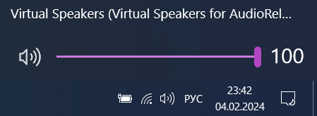
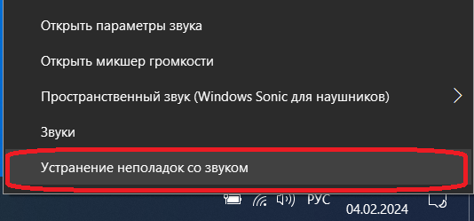
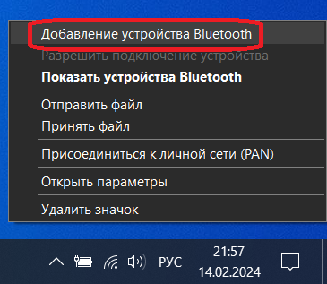
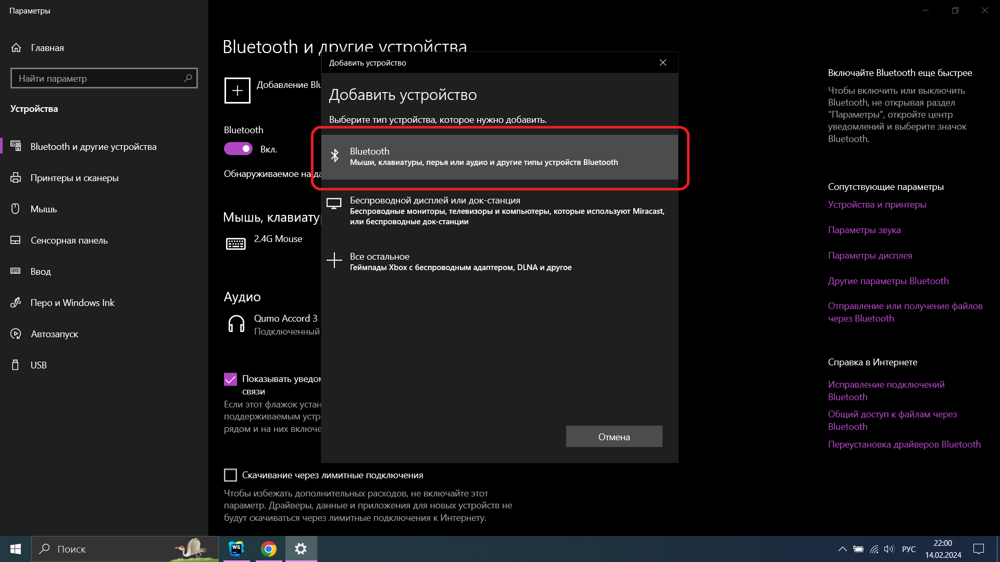
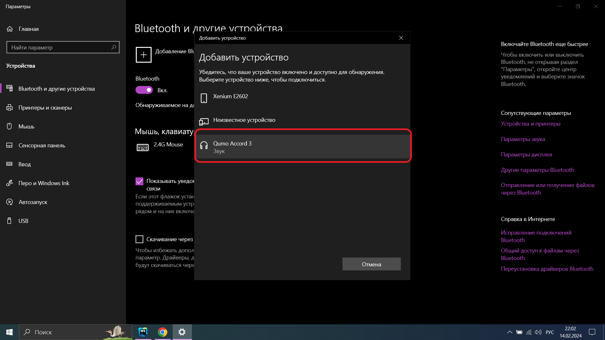

Ошибки со звуком
Наверное с вами происходила такая проблема, что вы включили видео, а звука нет. Если приключились
такое дело на ПК, то попробуйте проверить хорошо ли подключены динамики, на ноутбуке динамики
встроенные, поэтому здесь только в ремонт.
Исправим проблему:
- Посмотрим на значок звука на видео, вдруг он на минимальной громкости или вообще
выключен.
- Перетащите кружочек вправо.
- Проверьте включен ли у вас звук на самом пк или ноутбуке(
он расположен правом нижнем углу).
- Перетащите бегунок вправо.

- Если все перечисленное не сработало, то нажмите правой кнопкой мыши на значок
звука(который снизу слева).

- Выберите: устранение неполадок со звуком.
Если звук не удалось исправить, то ноутбук надо сдать
в ремонт, а если проблема на пк, попробуйте купить новые динамики. Ну есть конечно еще способ...
Можно попробовать вывести звук через беспроводные наушники или колонку.
Беспроводные наушники, колонки, мышки, клавиатуры - это все
блютуз(Bluetooth) устройства.
Попробуем, этот способ:
- Включим беспроводную колонку или наушники.
- Найдем на рабочем столе квадратик( в нижнем правом углу) и нажмем на него.
- Далее нажмем на Bluetooth, так мы подключим наше беспроводную колонку или
наушники, чтобы отключить связь, просто нажмите второй раз на эту кнопку.
- Ждем пока подключится наше устройство.
Если беспроводная колонка или наушники не отображаются,
значит надо вручную подключить его к ПК
или ноутбуку, а потом он запомнит беспроводное устройство и сам будет подключаться.
Добавим наше беспроводное устройство.
- Слева от процента заряда, будет уголок, нажмем сперва на него, а потом на английскую
букву B
- Нажимаем Добавление устройства по Bluetooth.

- Выбираем Добавление Bluetooth или другого устройства.
- Жмем на Bluetooth.

- Находим наше устройство. Не забудьте, что у вас должно быть включено беспроводное
устройство.

- Ждем когда подключится.
- Все, можно пользоваться.
Попробуйте исправить звук на видео ниже